Altair is a private film and TV server. It isn't on the open internet: you reach it through Tailscale, a free app that creates a secure private link to the server. Once that's set up, you watch everything in the Streamyfin app on your phone, or the Jellyfin or Wholphin app on your TV.
Why we're moving from Plex. Plex charges for watching away from home, while Jellyfin is completely free. Jellyfin also lets me add some great automations: you can request films and shows right from the app and they're added automatically, new episodes turn up on their own, and everything stays private to us.
Important: Films and TV Shows are migrating to the new server. Films are being transferred first, when they disappear on Plex, use the new server. Shows will still be available on Plex while they transfer to the new server. Once migration is complete, I'll inform you and Plex will be shut down. There should be little to no disruption. Setup ready on the new system before migration is complete.
Please tell me about any playback problems. This is new, so if something stutters, won't play, has missing subtitles or audio out of sync, report it at requests.altair.watch (see Report a problem below). If that doesn't work for you, email help@altair.watch instead.
Contents
- Step 1: Set up Tailscale on your phone
- Step 2: Download Streamyfin to your phone
- Step 3: Watch on your TV
- If something isn't working
To get started you'll need:
- The Tailscale invite link I sent you
- About 10 minutes for your phone, plus 10 minutes per TV
The server address is altair.watch. You'll type it into the apps below.
Step 1: Set up Tailscale on your phone ↑
The screenshots are from an Android phone. iPhone looks slightly different, but the steps are the same.
1. Open my invite link. Tap the Tailscale invite link I sent you and sign in with Google, Microsoft, GitHub, Apple or a passkey. This creates your free Tailscale account.
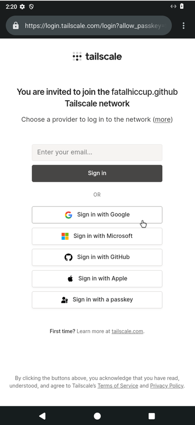
2. Join the tailnet. Tap Join tailnet to accept the invite to the Altair (fatalhiccup.github) network.
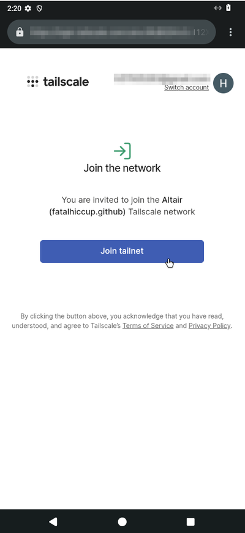
3. Wait for me to approve you. You'll see User approval required. I get a notification and approve your account, and I'll message you once it's done.
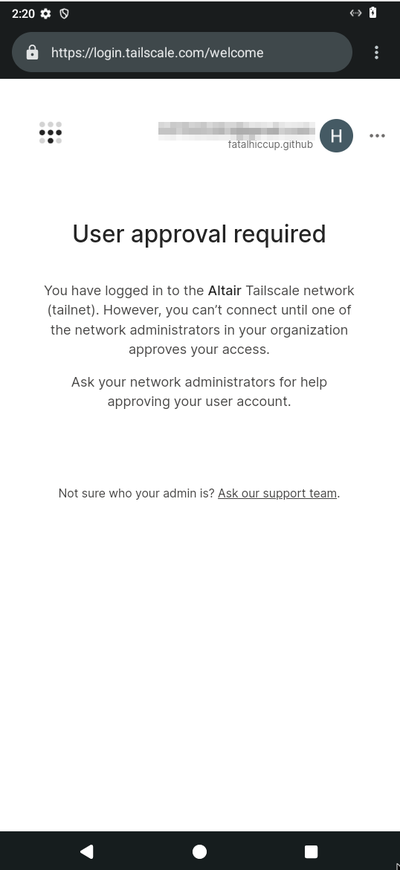
4. Download Tailscale. Once you're approved, the page says Join your network. Tap Download Tailscale, choose your device (Android or iOS), and install it from Google Play or the App Store.
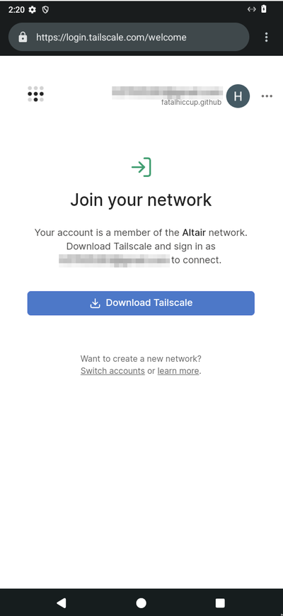
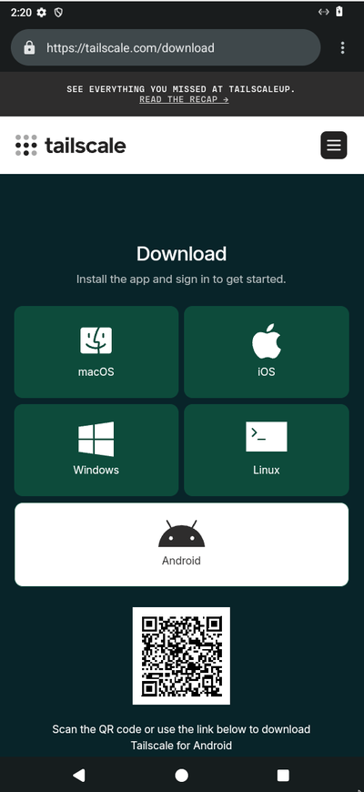
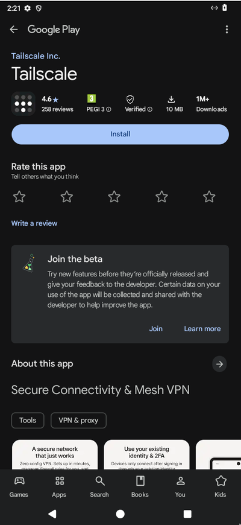
5. Allow the VPN. Open Tailscale. When it asks to set up a VPN connection, tap OK (on iPhone, tap Allow and enter your passcode or use Face ID). This is how Tailscale makes the private link.
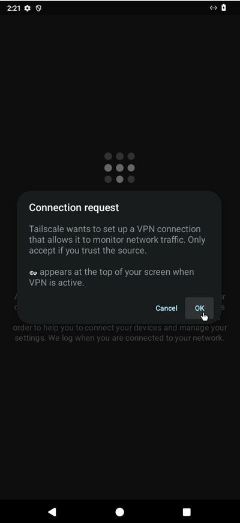
6. Log in and choose the tailnet. Tap Log in and sign in with the same account as in step 1. On the Connect device page, select Altair (fatalhiccup.github) and tap Connect.
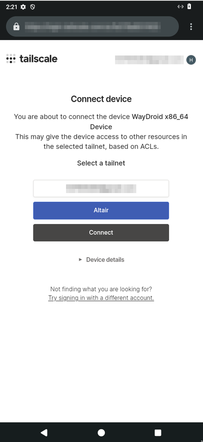
7. Wait for approval, then refresh. The page says Logged in, but device not connected while I approve your phone. Once I have, refresh the page. It should say Login successful.
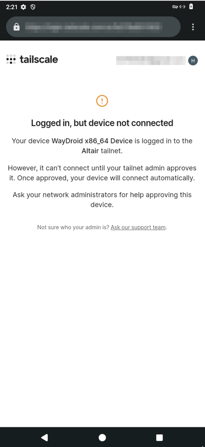
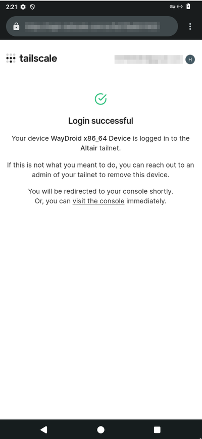
8. Check you're connected. In the Tailscale app, the switch at the top should say Altair, Connected, and the server, called kessel, appears in the list of devices.
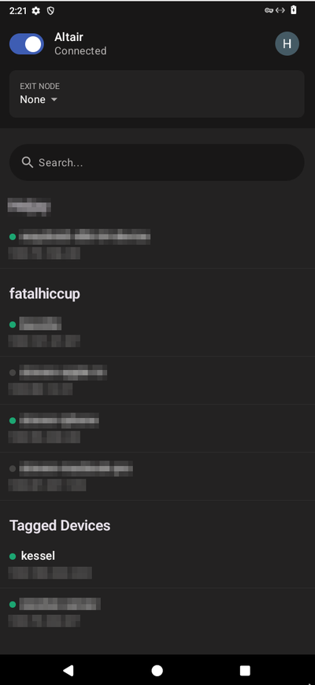
Tailscale needs to be switched on whenever you watch. It only sends Altair traffic through the private link; your normal browsing isn't affected.
Step 2: Download Streamyfin to your Phone ↑
1. Install Streamyfin. Search for Streamyfin in the App Store or Google Play and install it. It's free.
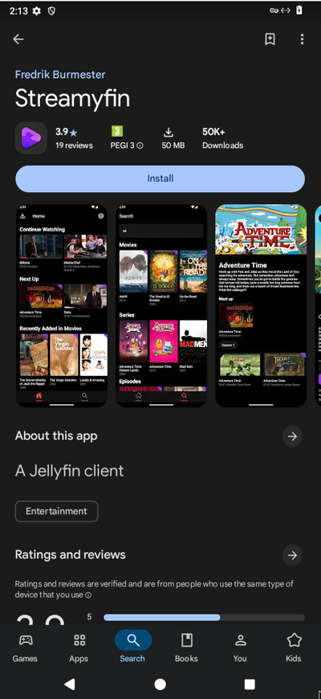
2. Make sure Tailscale is Connected (see Step 1).
3. Connect to the server. Open Streamyfin. Where it asks for a server address, type altair.watch and tap Connect.
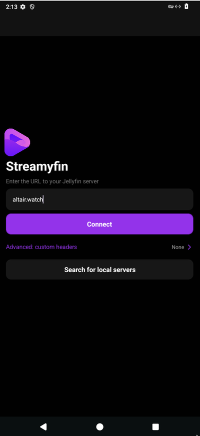
4. Log in with your profile: type your name and leave Password empty (unless you've set a PIN). Turn Save this account on and tap Log in.
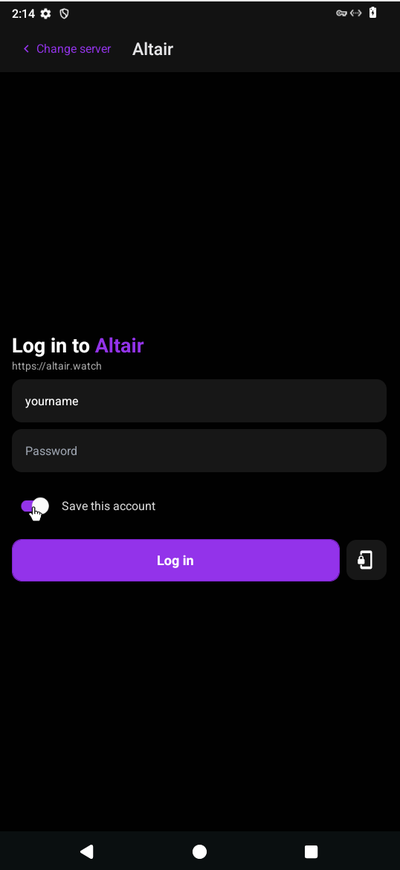
5. Save your account. Streamyfin asks how to protect the saved account. Choose No protection and tap Save. The PIN option here is only a lock for this app, so you don't need it.
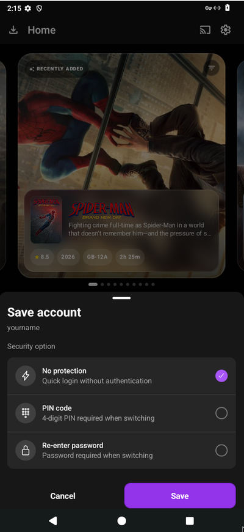
6. Finish the welcome screen. Look through the features, change any settings you want, and tap Done.
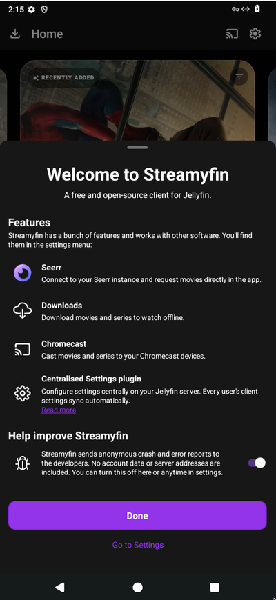
Optional: protect your profile with a PIN ↑
Everyone's profile shows on the sign-in screen with no password. You may wish to set a password. A 6-digit PIN works best, because it's quick to type with a TV remote.
- With Tailscale on, open a web browser on your phone or computer and go to
https://altair.watch. Tap your name to sign in. - Tap the profile icon (top right) → Settings → Profile.
- In the Password section, leave Current password empty. Type your 6-digit PIN in New password and Confirm new password.
- Tap Save.
From then on, you'll tap your name and type your PIN to sign in, on your phone and your TV. Apps you're already signed in to may ask you to sign in again once.
Request films and shows ↑
Here's the exciting part: Streamyfin lets you browse any film or TV show, not just what's already on Altair, and request it. Requests are fetched automatically and appear in your library when they're ready.
1. Find it. Tap the Search tab and type the title. If Altair doesn't have it yet, switch the results from Library to Discover (the requests results) to see it. You can also browse trending, popular and upcoming titles there.
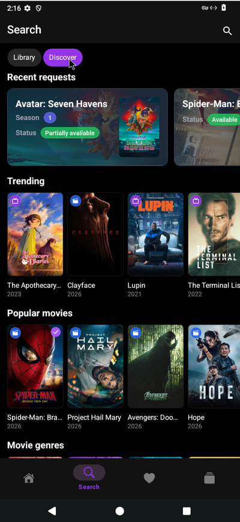
2. Request it. Tap the poster, then tap Request. For a TV show, choose which seasons you want (or all of them), then confirm.
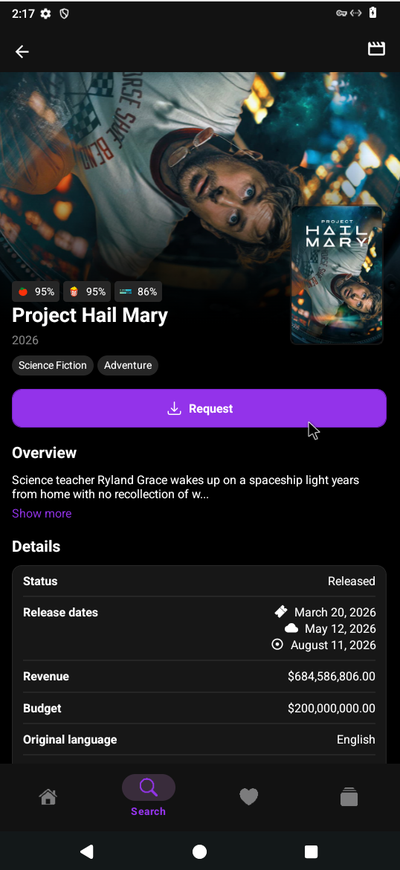
3. Wait for it. The title now shows as Requested or Processing. Some requests need my approval first; once approved, the server finds and downloads it automatically.
4. Watch it. When it's ready, the status changes to Available and it appears in Films or TV, usually within an hour, though new or rare titles can take longer, and some can't be found at all. Brand-new releases arrive once they're out digitally, not while they're only in cinemas.
You don't need a separate login for requests: Streamyfin uses your Altair account. If Discover or Request doesn't appear, make sure Streamyfin is updated, then close and reopen it.
Get notified about your requests and reports ↑
To hear when a request is approved or ready, or when I reply to a problem you've reported, you must add your email address. Without it, you won't get any notifications.
- With Tailscale on, open
https://requests.altair.watchin a web browser and sign in with your Altair profile (and your PIN, if you've set one). - Tap your profile picture → Settings → General, enter your Email address and tap Save.
- Go to Settings → Notifications → Email and tick Request Approved, Request Available, Issue Comment and Issue Resolved. Tap Save.
Optional: notifications on your phone. On iPhone, open requests.altair.watch in Safari, tap Share → Add to Home Screen, then open it from the new icon. Go to Settings → Notifications → Web Push, tick the same options, and tap Allow when asked. On Android, do the same in Chrome (menu → Add to Home screen).
Report a problem ↑
- With Tailscale on, open
https://requests.altair.watchand search for the film or show. - Open it and tap Report an Issue.
- Choose the type (Video, Audio, Subtitles or Other). For TV, pick the season and episode.
- Describe what happened, including which device you were using and roughly when, then tap Submit.
To see your reports and my replies, go to https://issues.altair.watch. You'll get an email when I reply or fix it (if you've added your email).
If reporting doesn't work, email help@altair.watch with the title, what went wrong, your device and roughly when.
Step 3: Watch on your TV ↑
Your TV needs to run Google TV / Android TV, Fire TV or Apple TV to use Tailscale. Most Samsung, LG, Roku and Hisense (VIDAA) TVs can't, so plug a streaming stick into a spare HDMI port instead. Good options are the Xiaomi TV Stick 4K (2nd Gen), the Google TV Streamer, or an Amazon Fire TV Stick 4K Max or 4K Plus.
Note: 2025+ Fire TV Sticks will not work:
Fire TV sticks to avoid. These run Amazon's newer Vega OS, which can't install Tailscale or Jellyfin:
- Fire TV Stick 4K Select (2025)
- Fire TV Stick HD (2026), the newest HD model with Wi-Fi 6. The older Fire TV Stick HD with Wi-Fi 5 is fine.
If you're buying one, check the exact name before you order. Amazon may also release more Vega OS sticks in future.
On TVs you'll use an app built for a TV remote rather than Streamyfin: Wholphin on Google TV and Android TV, the official Jellyfin app on Fire TV, and Swiftfin on Apple TV.
You can't make requests on the TV. The TV apps only play what's already on Altair. To ask for something new, use Streamyfin on your phone (see Request films and shows above), or open https://requests.altair.watch in a web browser on your phone or computer with Tailscale on. Once a request is ready, it appears on the TV automatically.
Google TV and Android TV (including Xiaomi and Google TV Streamer) ↑
1. Install Tailscale. On the TV, open the Google Play Store (from the Apps section on the home screen), search for Tailscale and install it.
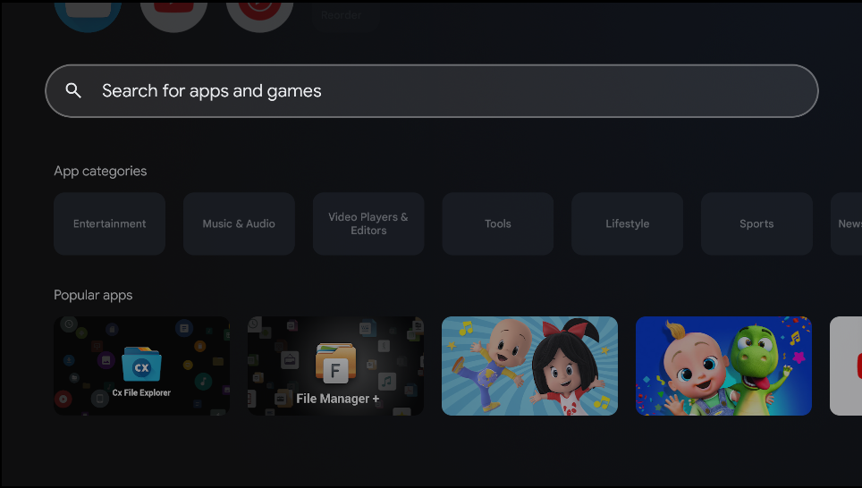
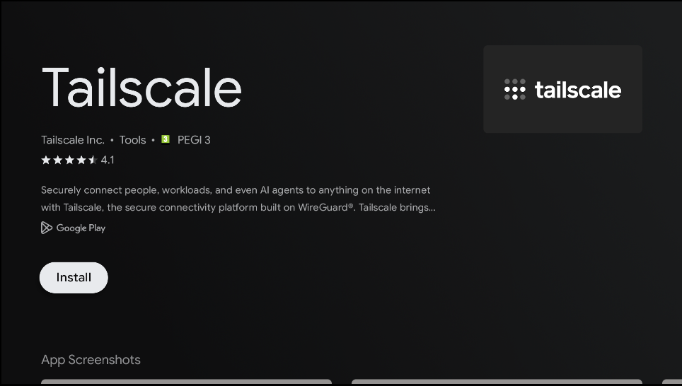
2. Allow the VPN. Open Tailscale. When the TV shows a Connection request, select OK.
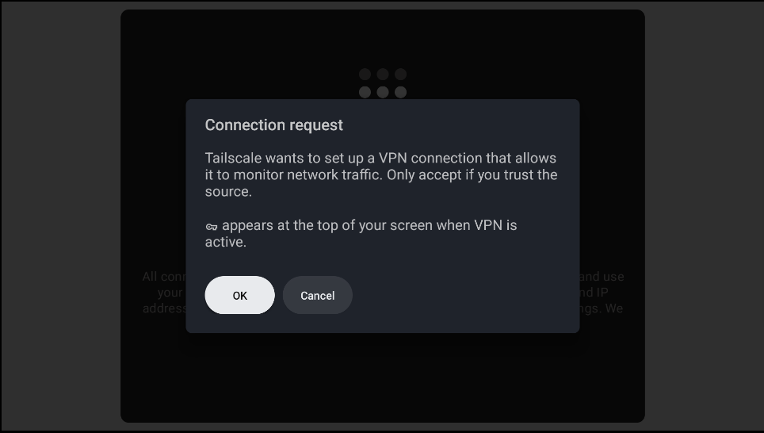
3. Sign in using your phone. Select Log in and a QR code appears on the TV. Scan it with your phone's camera, open the link, sign in with the same Tailscale account as on your phone, choose Altair (fatalhiccup.github) and tap Connect.
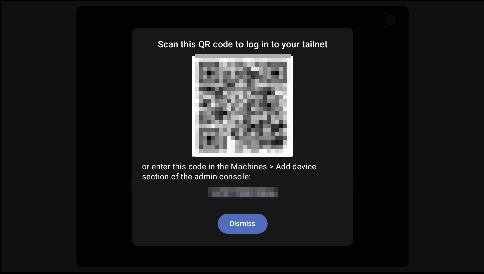
4. Wait for me to approve the TV. The TV shows Admin approval required until I approve it. Once I have, it connects by itself.
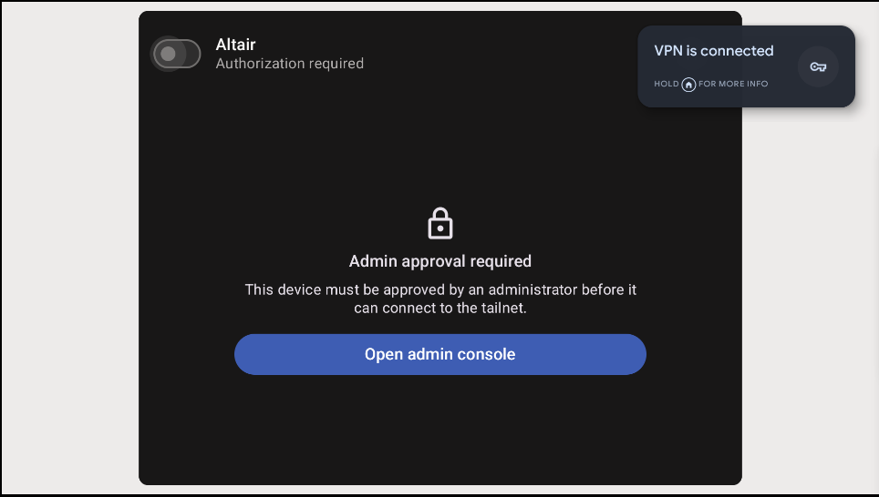
5. Install Wholphin. In the Play Store on the TV, search for Wholphin and install it. It's a Jellyfin app built for TV remotes.
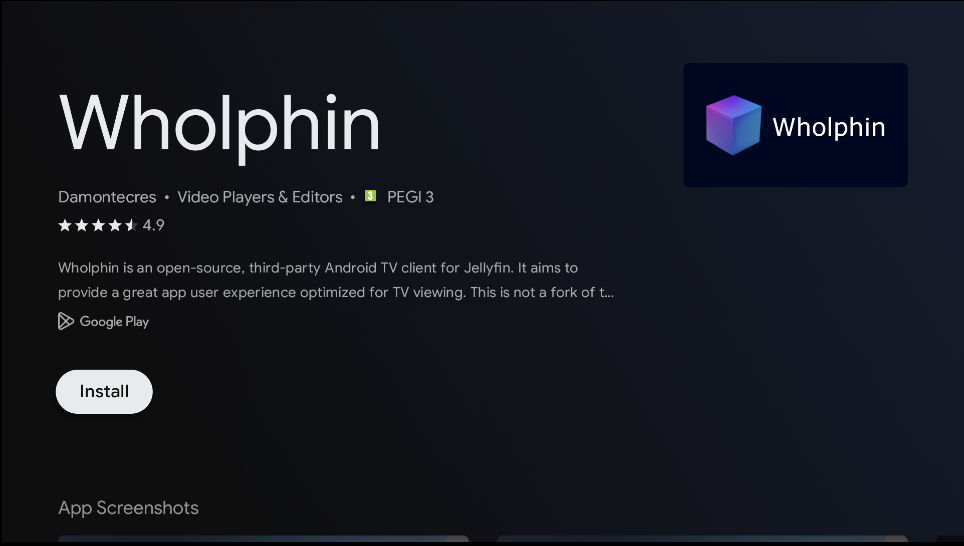
6. Add the server. Open Wholphin and select Add Server. Type altair.watch and select Submit.
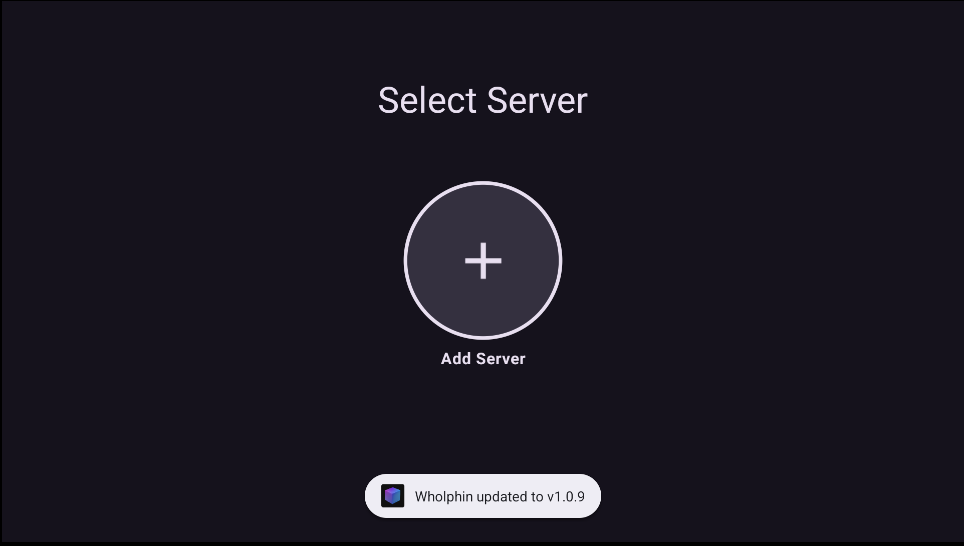
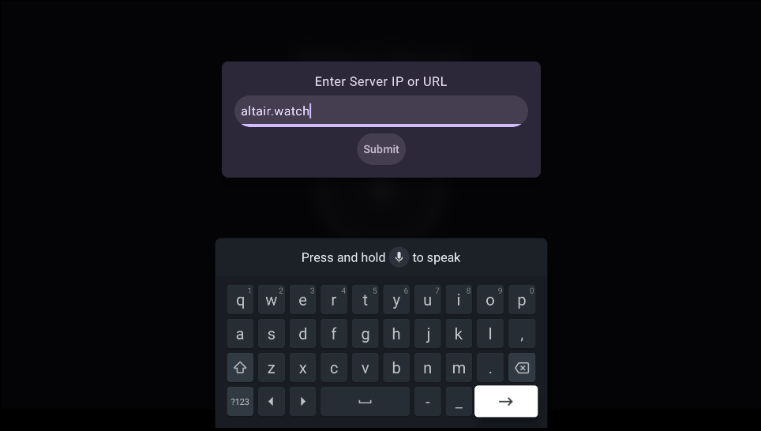
7. Pick your profile. Select your name on the Select User screen.
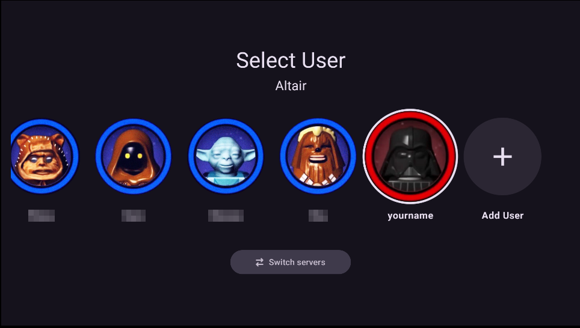
8. Choose username and password. Wholphin shows a Quick Connect code. You don't need it: select Use username/password instead.
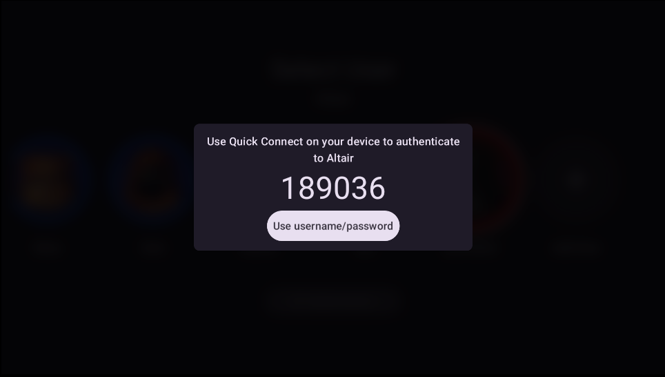
9. Log in. Your name is already filled in. Leave Password empty (or type your PIN if you've set one) and select Login.
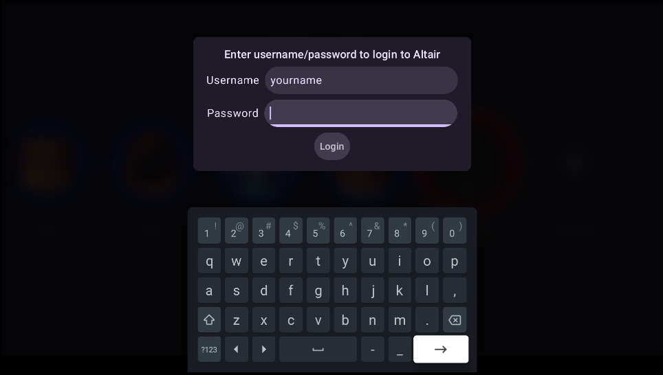
10. You're in. Altair's home screen appears and you can start watching.
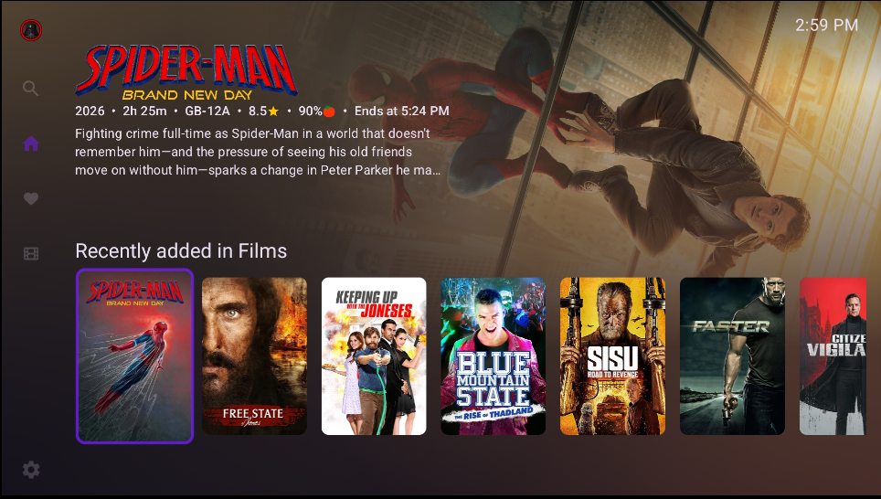
Fire TV Stick ↑
Check your model first. The Fire TV Stick 4K Select and the newest Fire TV Stick HD (2026) can't run Tailscale or Jellyfin. The Fire TV Stick 4K Max, 4K Plus, Fire TV Cube and most older Fire TV sticks and Fire TV-built-in TVs work. Your model name is under Settings → My Fire TV → About.
1. Install Tailscale. From the Fire TV home screen, go to Find → Search, type Tailscale, and install it from the Amazon Appstore.
2. Allow the VPN. Open Tailscale. When a Connection request window appears, select OK, then Get Started, and accept the prompts to add a VPN configuration.
3. Sign in using your phone. Select Log in. A QR code appears on the TV. Scan it with your phone's camera and sign in with the same Tailscale account as on your phone, choose the fatalhiccup.github tailnet, and wait for me to approve the TV. It connects by itself once I have.
4. Install Jellyfin. Back on the home screen, Find → Search, type Jellyfin, and install the official Jellyfin app.
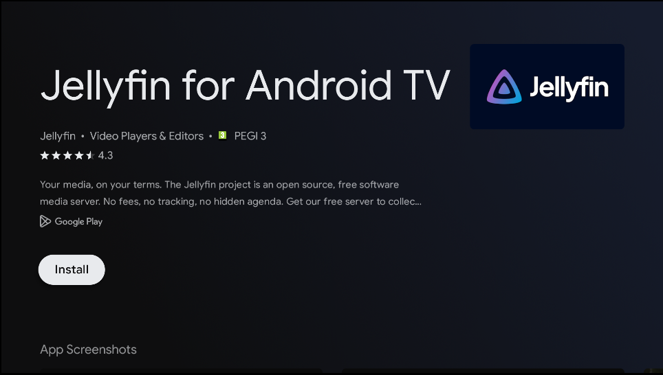
5. Enter the server. Open Jellyfin, type altair.watch as the server address and select Connect.
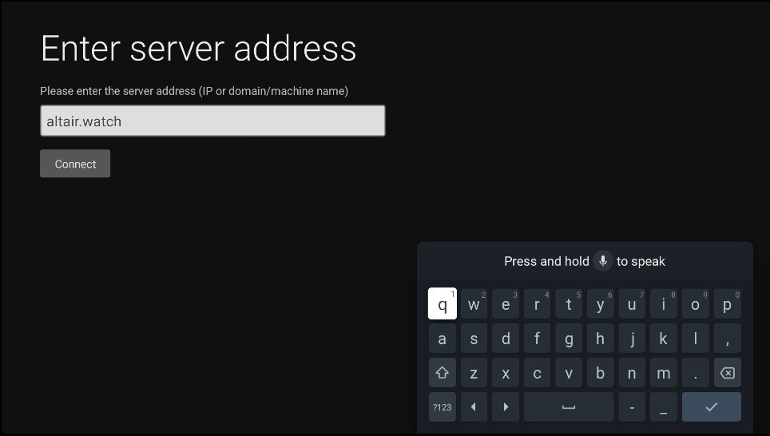
6. Pick your profile. Select your name on the Who's watching? screen.
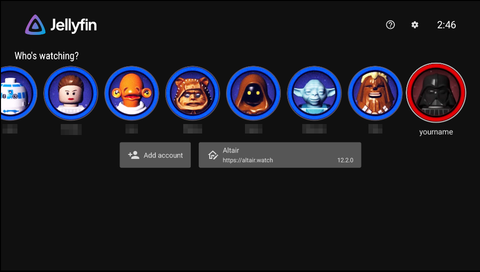
7. Choose Use a password. Jellyfin shows a Quick Connect code. You don't need it: select Use a password at the bottom.
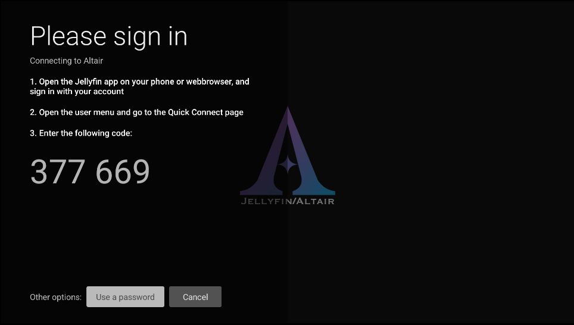
8. Sign in. Your name is already filled in. Leave Password empty (or type your PIN if you've set one) and select Sign in.
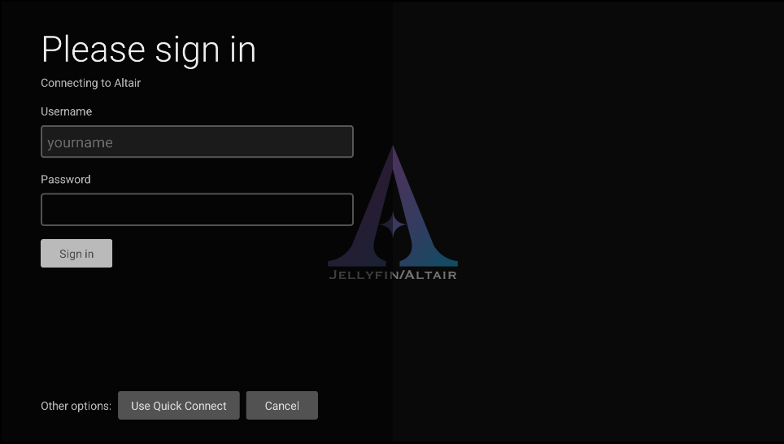
9. You're in. Altair's home screen appears and you can start watching.
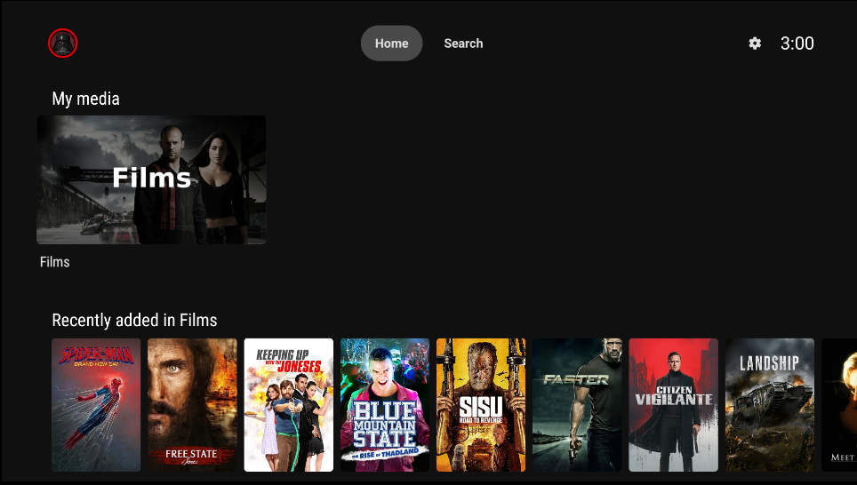
Apple TV ↑
Install Tailscale from the App Store on the Apple TV and sign in with the same account (it shows a code or QR to approve on your phone). Then install Swiftfin (the Jellyfin app for Apple TV), enter altair.watch and tap your name.
If something isn't working ↑
"Can't connect to server" or nothing loads
- Open Tailscale and check it says Connected. This fixes it nine times out of ten.
- On a TV, Tailscale can switch off after the TV restarts. Open the Tailscale app and turn it back on.
- Check the address is exactly
altair.watch(nowww.).
The server isn't in my Tailscale app
- Make sure you're logged in to the fatalhiccup.github tailnet with the same account you used for the invite. In the Tailscale app, tap your account name to see or switch tailnets. If it says waiting for approval, message me and I'll approve you.
- If the invite link has expired, ask me for a new one.
Forgotten your PIN
- Your profile has no password unless you set one yourself.
- If you've set a PIN and forgotten it, message me and I'll clear it so you can set a new one.
It works at home but not elsewhere (or the other way round)
- Some home routers block the Altair address. Try with Wi-Fi off, using mobile data. If it works there, tell me which router you have.
Playback stutters or buffers
- Lower the quality in the player settings (for example 1080p or 720p). This helps most on slow Wi-Fi or mobile data.
- On a TV stick, a stronger Wi-Fi signal, or plugging in Ethernet where possible, makes the biggest difference.
Still stuck? Send me a message with what you see on screen (a photo helps).